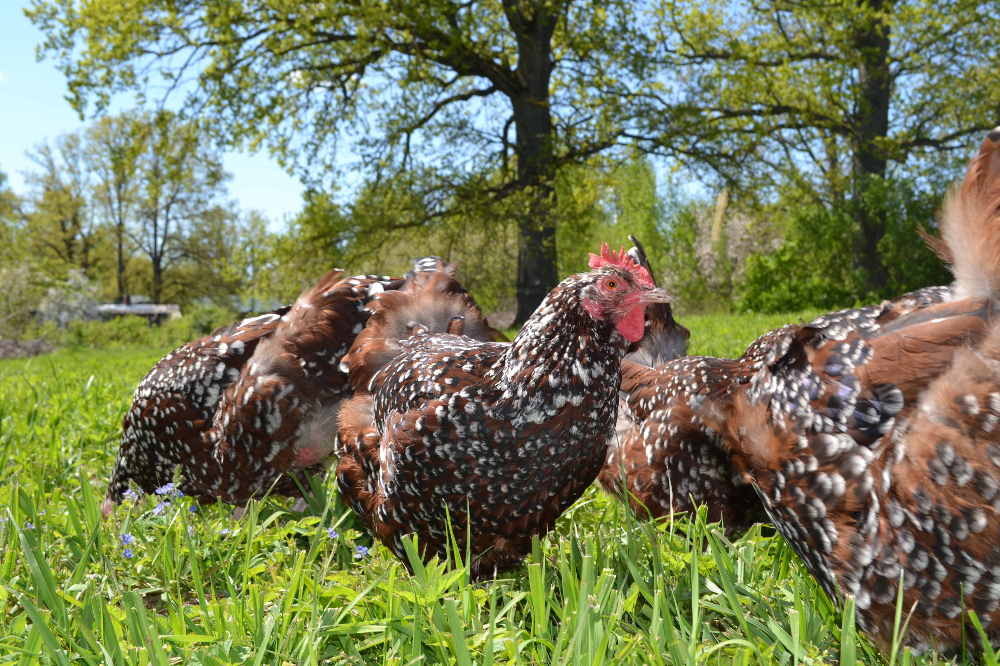

Trīskrāsu Saseksas (Speckled Sussex/Sussex Tricolor) šķirnes putni ir olu un gaļas šķirne (dual-purpose). Gaiļi sasniedz 3.5 - 4.5 kg svaru un vistas 3 - 3.2 kg svaru. Vistas dēj 4 - 5 vidēji lielas (56-63g) krēmkrāsas olas nedēļā. Piemērotas aukstam klimatam; karstumu arī pacieš samērā labi. Ļoti draudzīgi un ziņkārīgi putni. Labi uzvedas gan slēgta tipa telpās, gan brīvās turēšanas apstākļos.